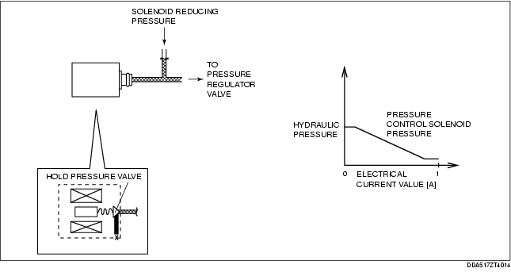

PRESSURE CONTROL SOLENOID (LINEAR TYPE) OPERATION [FN4A-EL]
id0517a1110200
• By changing the electrical current value (0 A-1 A) inside the solenoid, the pressure control solenoid adjusts the hold power of the hold pressure valve, controlling the pressure control solenoid pressure to the prescribed hydraulic pressure.
